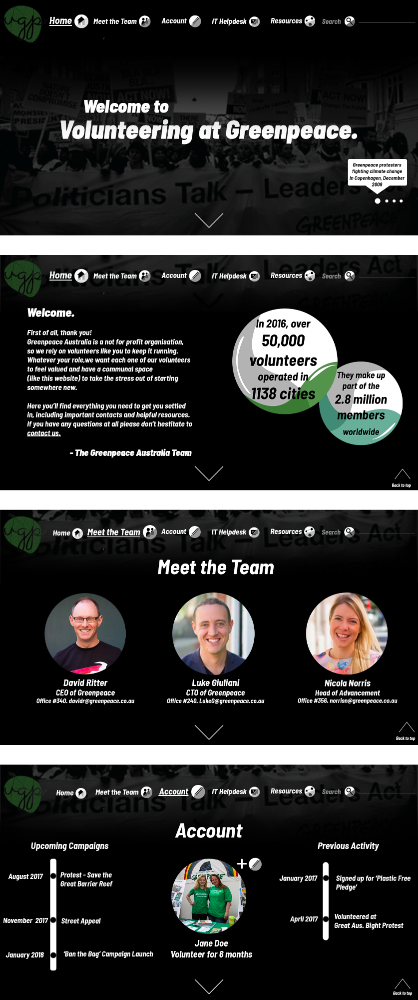

Volunteering at Greenpeace is a subset of the Greenpeace brand which fosters a sense of community through a specialised website which acts as a central hub for volunteers. For this project, it was integral that the updated branding was distinguished enough to stand alone from the Greenpeace brand, yet still had imagery and motifs relevant to the parent company.
Initial ideation for the Volunteering at Greenpeace logo began with creating a moodboard which contained patterns, shapes and images pertaining to nature and it's connections to humans. As is demonstrated above, I began with a circular shape and incorporated subtle natural motifs such as the leaf skeletons. The leaf skeletons portrayed a connection between plants and animals, and added an interesting texture to an otherwise flat logo. I decided to alter the shape of the logo from a circle to a pebble. This shape reflects aspects of nature which are random and imperfect, and was therefore used for the final logos.
The final logos use negative space to create a sense of fluidity through the page and typeface. The script typeface evokes a casual tone, which adheres to the brief by being inviting for volunteers. Additionally, the final logos work well alongside the current Greenpeace logo, by using a muted version of their signature green colour palette. Lastly, the final logo's are adaptable to all types of backgrounds and materials, making them versatille.
The Volunteering at Greenpeace website acts as a hub for volunteers, where they can feel connected to their work by having access to key contacts and resources. When creating the website mockup, I had three objectives in mind. These were: easily accessible, motivational, and approachable. The account page in particular motivates users to continue with their volunteering by displaying what they have achieved in the past and what opportunities are in the future. The 'Meet the Team' page allows volunteers to feel connected to people in the company. This page as well as the welcome screen (shown on the home page) make the website approachable to volunteers.
